| 1. 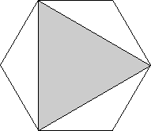 | 2. 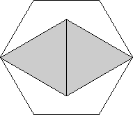 | 3. 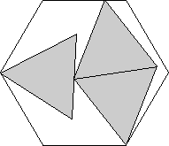 | ||
| s = 1/√3 = .577+ Trivial. | s = √3/2 = .866+ Trivial. | s = √((6+√33)/12) = .989+ Found by Erich Friedman in April 2005. |
| 4. 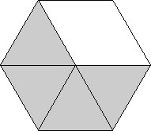 | 5. 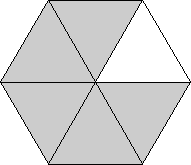 | 6. 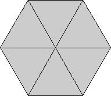 | ||
| s = 1 Trivial. | s = 1 Trivial. | s = 1 Trivial. |
| 7. 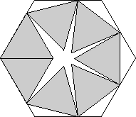 | 8. | 9. 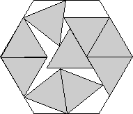 | ||
| s = 1.277+ Found by David W. Cantrell in May 2005. | s = 1.356+ Found by David W. Cantrell in July 2012. | s = 1.434+ Found by Erich Friedman in April 2005. |
| 10. 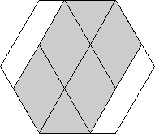 | 11. 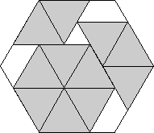 | 12. 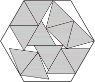 | ||
| s = 1.497+ Found by Timo Berthold et al in January 2026. | s = 3/2 = 1.500 Found by Erich Friedman in April 2005. | s = 1.623+ Found by Timo Berthold et al in January 2026. |
| 13. 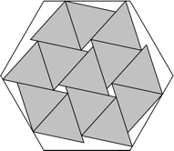 | 14. 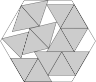 | 15. 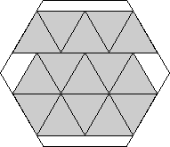 | ||
| s = 1.66383+ Found by Ian Watson in April 2026. | s = 1.725+ Found by Maurizio Maurandi in April 2008. Improved slightly by David W. Cantrell in August 2012. | s = 7/4 = 1.750 Found by Erich Friedman in April 2005. |
| 16. 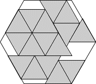 | 17. 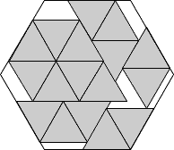 | 18. 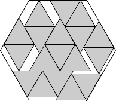 | ||
| s = 9/5 = 1.800 Found by Maurizio Morandi in April 2008. | s = 11/6 = 1.833+ Found by Maurizio Morandi in April 2008. | s = 17/9 = 1.888+ Found by Maurizio Morandi in April 2008. |
| 19. 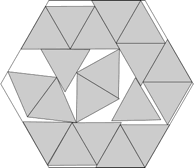 | 20. | 21. 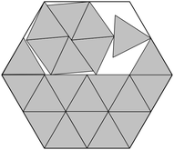 | ||
| s = 1.953+ Found by Alex Adrián Nieto in April 2026. | s = 1.97595+ Found by Ian Watson in April 2026. | s = 1.99878+ Found by Ian Watson in April 2026. |
| 22.-24. 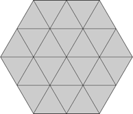 | 25. 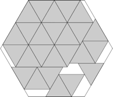 | 26. 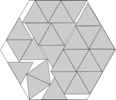 | ||
| s = 2 Trivial. | s = 13/6 = 2.166+ Found by Ignacio Vallejo in April 2026. | s = 2.21991+ Found by Ian Watson in April 2026. |
| 27. 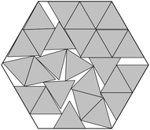 | 28. | 29. | ||
| s = 2.29541+ Found by Ian Watson in April 2026. | s = 2.32289+ Found by Ian Watson in April 2026. | s = 7/3 = 2.333+ Found by Ignacio Vallejo in April 2026. |
| 30. | 31. 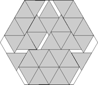 | 32. 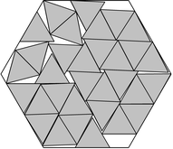 | ||
| s = 19/8 = 2.375 Found by Ignacio Vallejo in April 2026. | s = 12/5 = 2.400 Found by Emerson Connelly in April 2026. | s = 2.465+ Found by Emerson Connelly in April 2026. |
| 33. | 34.-35. 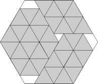 | 36. 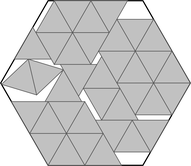 | ||
| s = 2.498+ Found by Emerson Connelly in April 2026. | s = 5/2 = 2.500 Found by Emerson Connelly in April 2026. | s = 2.592+ Found by Emerson Connelly in April 2026. |
| 37. 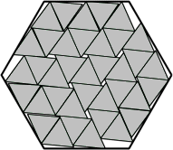 | 38.-39. 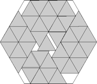 | 40. | ||
| s = 2.655+ Found by Emerson Connelly in April 2026. | s = 8/3 = 2.666+ Found by Emerson Connelly in April 2026. | s = 2.719+ Found by Emerson Connelly in April 2026. |